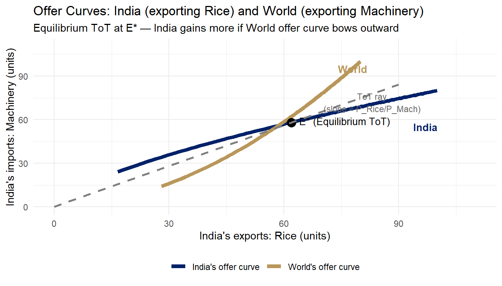

t <- seq(0.05, 1, by = 0.01)
india_rice <- 100 * t^0.6
india_mach <- 80 * t^0.4
world_rice <- 80 * t^0.35
world_mach <- 100 * t^0.65
ggplot() +
geom_path(data = data.frame(x = india_rice, y = india_mach),
aes(x = x, y = y, colour = "India's offer curve"), linewidth = 1.8) +
geom_path(data = data.frame(x = world_rice, y = world_mach),
aes(x = x, y = y, colour = "World's offer curve"), linewidth = 1.8) +
geom_point(aes(x = 62, y = 58), size = 4, colour = "black") +
annotate("text", x = 64, y = 59, label = "E* (Equilibrium ToT)",
size = 3.5, hjust = 0) +
geom_segment(aes(x = 0, y = 0, xend = 90, yend = 84),
linetype = "dashed", colour = "grey50", linewidth = 1) +
annotate("text", x = 83, y = 72,
label = "ToT ray\n(slope = P_Rice/P_Mach)", size = 3, colour = "grey40") +
annotate("text", x = 97, y = 55, label = "India",
size = 3.5, colour = "#012169", fontface = "bold") +
annotate("text", x = 78, y = 95, label = "World",
size = 3.5, colour = "#B9975B", fontface = "bold") +
scale_colour_manual(
values = c("India's offer curve" = "#012169",
"World's offer curve" = "#B9975B")) +
labs(title = "Offer Curves: India (exporting Rice) and World (exporting Machinery)",
subtitle = "Equilibrium ToT at E* — India gains more if World offer curve bows outward",
x = "India's exports: Rice (units)",
y = "India's imports: Machinery (units)",
colour = NULL) +
scale_x_continuous(limits = c(0, 110)) +
scale_y_continuous(limits = c(0, 110)) +
theme(legend.position = "bottom")